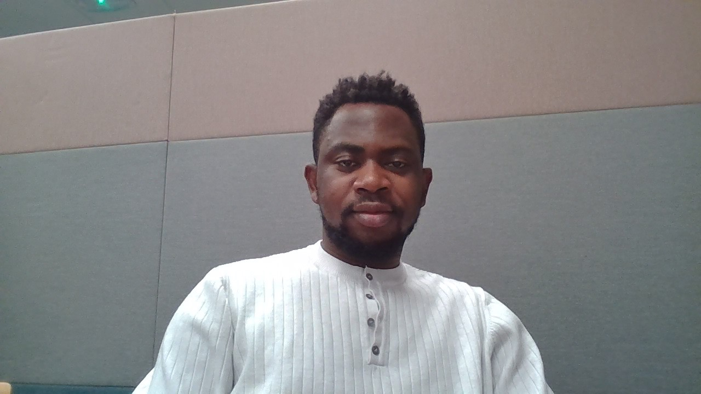

Godwin Umar
Summary
I'm certified and licensed to practice as a registered Nurse (RN) by the Nursing and Midwifery
Council of Nigeria (NMCN) and Nursing and Midwifery Council, United Kingdom
Education
- Bachelor of Nursing Science, University of Ilorin
- Master of International Public Health, Liverpool John Moore University
Work Experience
-
Intern Nurse at Federal Medical center, Delta state (March, 2018 – March, 2019)
I worked mainly as an intern. I was posted to several wards starting from Accident and Emergency
ward, then Paediatric ward, Trauma and Orthopedic ward, Maternity ward, Public health department,
Psychiatric ward, Outpatient department, Medical ward, Labour ward, Theater and Surgical ward. I did
several nursing procedures such as wound dressing, cannulation, suturing of minor cuts,
catheterization, serving medication, vital signs, admission and discharge of patients, scrubbing for
surgery, counselling, care for tractions and casts, assisting in delivery, antenatal and postnatal care, ear
irrigation and blood transfusion. I embarked on ward-based researches to determine the causes of
specific illnesses and evaluate the efficacy of various interventions
- Nursing Officer at Primary Health Care Center, Bayelsa state (March, 2019 – March, 2020)
I worked mainly as a community nurse during a one year compulsory national youth service
programme. I carried out several nursing procedures such as community health education, admission
and discharge of patients, wound dressing, cannulation, suturing, catheterization, serving medication,
vital signs, counseling, delivery, antenatal and postnatal care and blood transfusion
- Staff nurse at University Hospital, Dorset, United kingdom (January 2021 till date)
I work as a staff nurse in trauma unit of the hospital. I coordinate patients’ care, carry out several
procedures ranging from cannulation, venepuncture, catheterization, cast care, application of
traction, IV and non-IV medications, bowel care, ANTT procedures and more. In collaboration with
the ward management, I carry out researches to ascertain the reasons for occurrence of certain
illness and to access the effectiveness of certain interventions.
Skill
- Excellent time management.
- Effective communication
- Able to thrive under pressure.
- Ability to learn new task and information quickly
- Proficient user of computer applications
- Able to interact with other team members focused on the client outcome.
- Proven management, leadership and political skills
Awards
- Most Outstanding Students Award
- Best Graduating STudents Award
Others
My contact